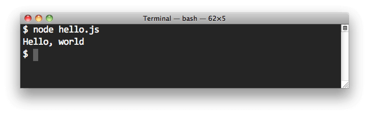

How easy a programming language is to use largely depends on its ability to develop command-line programs.
As one of the most popular development tools today, knowing how to use Node.js to develop command-line programs is a skill Web developers should master.

Recently, the Npm blog published a series ofarticleswhich I think are very well written. Below is a tutorial I expanded based on them; it should be the best solution available at present.
1. Executable Scripts
Let's start with the simplest case.
First, write an executable script called hello using JavaScript.
#!/usr/bin/env node
console.log('hello world');
Then, modify the permissions of hello.
$ chmod 755 hello
Now, hello can be executed.
$ ./hello hello world
If you want to remove the path prefix before hello, you can add hello's path to the PATH environment variable. However, a better approach is to create a package.json in the current directory with the following content.
{
"name": "hello",
"bin": {
"hello": "hello"
}
}
Then run the npm link command.
$ npm link
Now when you execute hello again, you don't need to type the path.
$ hello hello world
2. Basic Command-line Argument Syntax
Command-line arguments can be obtained using the system variable process.argv.
#!/usr/bin/env node
console.log('hello ', process.argv[2]);
When executing, simply add the arguments directly after the script file.
$ ./hello tom hello tom
3. Creating Processes
Scripts can create child processes through the child_process module to execute Unix system commands.
#!/usr/bin/env node
var name = process.argv[2];
var exec = require('child_process').exec;
var child = exec('echo hello ' + name, function(err, stdout, stderr) {
if (err) throw err;
console.log(stdout);
});
The usage is as follows.
$ ./hello tom hello tom
4. The shelljs Module
shelljsThis module re-wraps child_process, making it more convenient to call system commands. It needs to be installed before use.
npm install --save shelljs
Then, rewrite the script.
#!/usr/bin/env node
var name = process.argv[2];
var shell = require("shelljs");
shell.exec("echo hello " + name);
The above code uses shelljs's local mode, which executes shell commands via the exec method. There's also a global mode that allows writing shell commands directly in the script.
require('shelljs/global');
if (!which('git')) {
echo('Sorry, this script requires git');
exit(1);
}
mkdir('-p', 'out/Release');
cp('-R', 'stuff/*', 'out/Release');
cd('lib');
ls('*.js').forEach(function(file) {
sed('-i', 'BUILD_VERSION', 'v0.1.2', file);
sed('-i', /.*REMOVE_THIS_LINE.*/n/, '', file);
sed('-i', /.*REPLACE_LINE_WITH_MACRO.*/n/, cat('macro.js'), file);
});
cd('..');
if (exec('git commit -am "Auto-commit"').code !== 0) {
echo('Error: Git commit failed');
exit(1);
}
5. The yargs Module
shelljs only solves how to call shell commands, while the yargs module addresses how to handle command-line arguments. It also needs to be installed.
$ npm install --save yargs
The yargs module provides an argv object for reading command-line arguments. Please see the rewritten hello.
#!/usr/bin/env node
var argv = require('yargs').argv;
console.log('hello ', argv.name);
When using it, either of the following two usages works.
$ hello --name=tom hello tom $ hello --name tom hello tom
If you change argv.name to argv.n, you can use the one-letter short parameter form.
$ hello -n tom hello tom
You can use the alias method to specify that name is an alias for n.
#!/usr/bin/env node
var argv = require('yargs')
.alias('n', 'name')
.argv;
console.log('hello ', argv.n);
This way, both short and long parameters can be used.
$ hello -n tom hello tom $ hello --name tom hello tom
The argv object has an underscore (_) property that retrieves arguments that don't start with a hyphen.
#!/usr/bin/env node
var argv = require('yargs').argv;
console.log('hello ', argv.n);
console.log(argv._);
The usage is as follows.
$ hello A -n tom B C hello tom [ 'A', 'B', 'C' ]
6. Configuring Command-line Arguments
The yargs module also provides 3 methods for configuring command-line arguments.
- demand: whether it is required
- default: default value
- describe: hint
#!/usr/bin/env node
var argv = require('yargs')
.demand(['n'])
.default({n: 'tom'})
.describe({n: 'your name'})
.argv;
console.log('hello ', argv.n);
The above code specifies that the n parameter cannot be omitted, has a default value of tom, and provides a line of description.
The options method allows all these configurations to be written into one object.
#!/usr/bin/env node
var argv = require('yargs')
.option('n', {
alias : 'name',
demand: true,
default: 'tom',
describe: 'your name',
type: 'string'
})
.argv;
console.log('hello ', argv.n);
Sometimes, certain parameters don't need a value and act only as switches. In this case, you can use the boolean method to specify that these parameters return boolean values.
#!/usr/bin/env node
var argv = require('yargs')
.boolean(['n'])
.argv;
console.log('hello ', argv.n);
In the above code, parameter n always returns a boolean value. The usage is as follows.
$ hello hello false $ hello -n hello true $ hello -n tom hello true
The boolean method can also be written as a property in the options object.
#!/usr/bin/env node
var argv = require('yargs')
.option('n', {
boolean: true
})
.argv;
console.log('hello ', argv.n);
7. Help Information
The yargs module provides the following methods to generate help information.
- usage: usage format
- example: provides examples
- help: displays help information
- epilog: appears at the end of the help information
#!/usr/bin/env node
var argv = require('yargs')
.option('f', {
alias : 'name',
demand: true,
default: 'tom',
describe: 'your name',
type: 'string'
})
.usage('Usage: hello [options]')
.example('hello -n tom', 'say hello to Tom')
.help('h')
.alias('h', 'help')
.epilog('copyright 2015')
.argv;
console.log('hello ', argv.n);
The execution result is as follows.
$ hello -h Usage: hello [options] Options: -f, --name your name [string] [required] [default: "tom"] -h, --help Show help [boolean] Examples: hello -n tom say hello to Tom copyright 2015
8. Subcommands
The yargs module also allows setting Git-style subcommands through the command method.
#!/usr/bin/env node
var argv = require('yargs')
.command("morning", "good morning", function (yargs) {
console.log("Good Morning");
})
.command("evening", "good evening", function (yargs) {
console.log("Good Evening");
})
.argv;
console.log('hello ', argv.n);
The usage is as follows.
$ hello morning -n tom Good Morning hello tom
You can combine this feature with the shellojs module.
#!/usr/bin/env node
require('shelljs/global');
var argv = require('yargs')
.command("morning", "good morning", function (yargs) {
echo("Good Morning");
})
.command("evening", "good evening", function (yargs) {
echo("Good Evening");
})
.argv;
console.log('hello ', argv.n);
Each subcommand often has its own arguments, so you need to specify them separately in the callback function. In the callback function, you must first use the reset method to reset the yargs object.
#!/usr/bin/env node
require('shelljs/global');
var argv = require('yargs')
.command("morning", "good morning", function (yargs) {
echo("Good Morning");
var argv = yargs.reset()
.option("m", {
alias: "message",
description: "provide any sentence"
})
.help("h")
.alias("h", "help")
.argv;
echo(argv.m);
})
.argv;
The usage is as follows.
$ hello morning -m "Are you hungry?" Good Morning Are you hungry?
9. Miscellaneous
(1) Return value
According to Unix tradition, a program returns 0 on success, otherwise it returns 1.
if (err) {
process.exit(1);
} else {
process.exit(0);
}
(2) Redirection
Unix allows programs to redirect data using pipes.
$ ps aux | grep 'node'
Scripts can obtain redirected data by listening to the data event on standard input.
process.stdin.resume();
process.stdin.setEncoding('utf8');
process.stdin.on('data', function(data) {
process.stdout.write(data);
});
Here's how to use it:
$ echo 'foo' | ./hello hello foo
(3) System signals
The operating system can send signals to running processes, and the process object can listen for signal events.
process.on('SIGINT', function () {
console.log('Got a SIGINT');
process.exit(0);
});
The method for sending signals is as follows.
$ kill -s SIGINT [process_id]
Original article: http://www.ruanyifeng.com/blog/2015/05/command-line-with-node.html